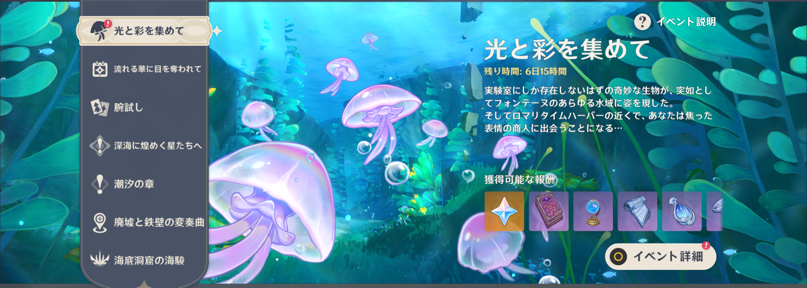
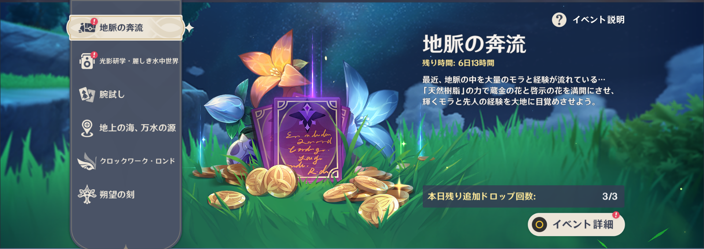
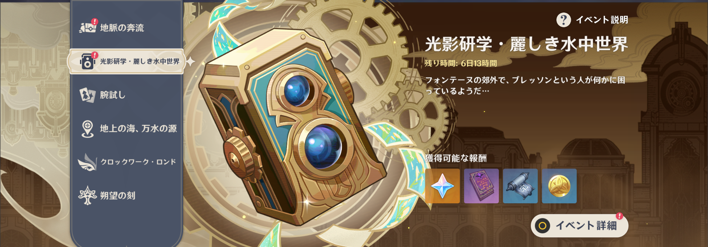
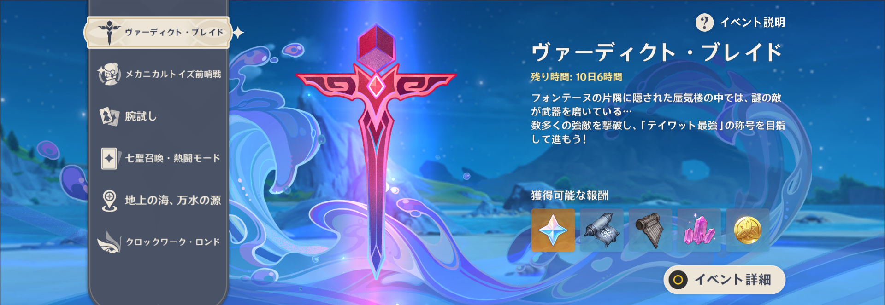

イベント情報

期間
2023/09/28 11:00~ 2023/10/09 04:59
報酬
原石(60x)、調度品、経験値本、武器素材、武器魔鉱、モラ
参加条件
冒険ランク20以上 フォンテーヌの任意の七天神像を開放かつ魔神任務 序章・第三幕「龍と自由の歌」をクリア
イベント内容
・イベント開始日から、毎日1つずつ新たな回収エリアが開放されていきます。回収エリアは全部で7つあります。
・挑戦では、回収エリアで「蛍光ムラサキクラゲ」を集めることになります。一定数を集めると挑戦クリアとなります。
挑戦をクリアすると原石、武器突破素材、大英雄の経験、仕上げ用魔鉱、モラを獲得できます。
・回収エリアに「乱流リング」と「乱流バブル」が出現することがあります。「乱流リング」と「乱流バブル」をうまく利用することで、
効率よく回収エリアを探索できます。

期間
2023/09/18 05:00 ~ 2023/09/25 04:59
報酬
経験値本、モラ、
参加条件
「地脈の花芽・蔵金の花」または「地脈の花芽・啓示の花」開放後
イベント内容
地脈の奔流」イベント期間中、「地脈の花芽・蔵金の花」または「地脈の花芽・啓示の花」をクリアし報酬を受け取る時、
「天然樹脂」を使用することで2倍の報酬を受け取ることができます。2倍報酬は毎日3回まで受け取ることができます！

期間
2023/09/14 11:00 ~ 2023/09/25 04:59
報酬
原石、フォンテーヌ天賦本、経験値本、モラ、
参加条件
冒険ランク20以上かつフォンテーヌの任意の七天神像を開放
イベント内容
イベント開始日から毎日1つずつ、新たな撮影記録の目標が開放されていきます。全部で6種類の目標があります。
写真機を使い、ブレッソンを手伝って色んなものを記録しましょう。
・ 任意の記録リクエストに一致するものを撮影して収録できます。記録すべきものが見つからない場合は、ブレッソンがお勧めする場所で探してみてください。
・撮影距離とフォーカスを適切に調整することで、目標の対象を捉えやすくなります。
・イベント期間中、撮影記録の目標を達成すると、各種報酬を獲得できます。

期間
2023/09/04 11:00 ~ 2023/09/18 04:59
報酬
原石(70x6回)、フォンテーヌ天賦本、フォンテーヌ武器素材、武器鉱石、モラ、
参加条件
冒険ランク18以上 魔神任務「龍と自由の歌」をクリア
イベント内容
イベント開放後、毎日1つずつ新たな挑戦ステージが追加されます。挑戦毎に「奔流」と「決意」の2つのモードがあります。
・ 「奔流」モードの各挑戦には「不穏」、「窮地」、「死闘」の3つの難易度が存在します。
難易度の高い挑戦をクリアすると、難易度の低い挑戦は自動的にクリア扱いとなります。
・「決意」モードの挑戦は「奔流」モードの難易度「死闘」クリア後に開放されます。
・挑戦ごとには2つのクリア条件があり、すべて達成したときのみ、クリア扱いとなります。
・挑戦ごとに独自の「捨て身の虚影」が存在します。強化効果を上手く利用すると、挑戦を有利に進められます。
※ イベント期間中、世界ランクの調整は本イベントの難易度に影響しません。
期間

報酬
ベネット、クラウン、原石、経験値本、突破宝石、武器鉱石、モラ、調度品
参加条件
冒険ランク20以上冒険ランク20以上 魔神任務「龍と自由の歌」をクリア
期間
4.0バージョンアップ後 ~ 2023/08/28 04:59
報酬
原石、経験値本、武器鉱石、モラ
参加条件
冒険ランク20以上かつフォンテーヌの任意の七天神像を開放
期間
2023/08/07 05:00 ~ 2023/08/14 04:59
報酬
獲得できる天賦本２倍(1日3回限定、濃縮樹脂不可)
参加条件
対応する天賦育成素材秘境を開放していること
期間
2023/08/03 11:00 ~ 2023/08/14 04:59
報酬
80原石x5、武器素材、経験値本、武器育成魔鉱、モラ
参加条件
冒険ランク20以上
期間
2023/07/27 11:00 ~ 2023/08/07 04:59
報酬
70原石x6、スメール武器素材、経験値本、モラ
参加条件
冒険ランク20以上かつ魔神任務「龍と自由の歌」をクリア
期間
報酬
原石(超大量)、レイラ、ガイア衣装、スメール天賦本、キャラ突破用宝石、調度品設計図、経験値本、武器育成魔鉱、モラ、その他イベントエリア宝箱アイテム
参加条件
冒険ランク18以上
魔神任務「龍と自由の歌」をクリア
※魔神任務「虚空の鼓動、熾盛の劫火」とエウルアの伝説任務「波沫の章 第一幕」、珊瑚宮心海の伝説任務「睡竜の章
第一幕」のクリア推奨。※イベント期間中、魔神任務「虚空の鼓動、熾盛の劫火」とエウルアの伝説任務「波沫の章 第一幕」、珊瑚宮心海の伝説任務「睡竜の章
第一幕」をクリアしていない場合、イベント画面にて「クイックスタート」でイベントに参加となります。